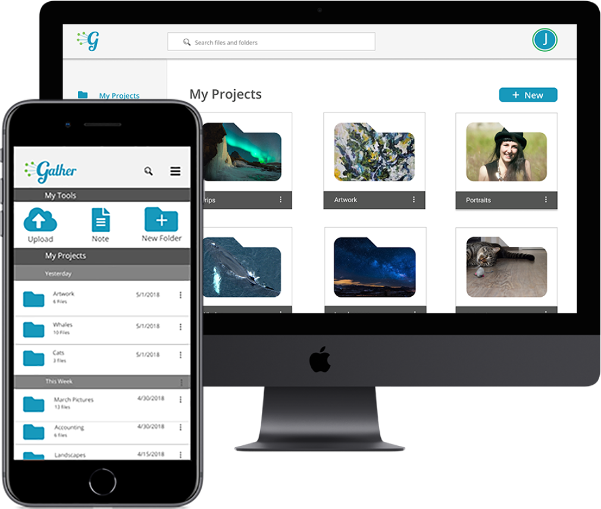
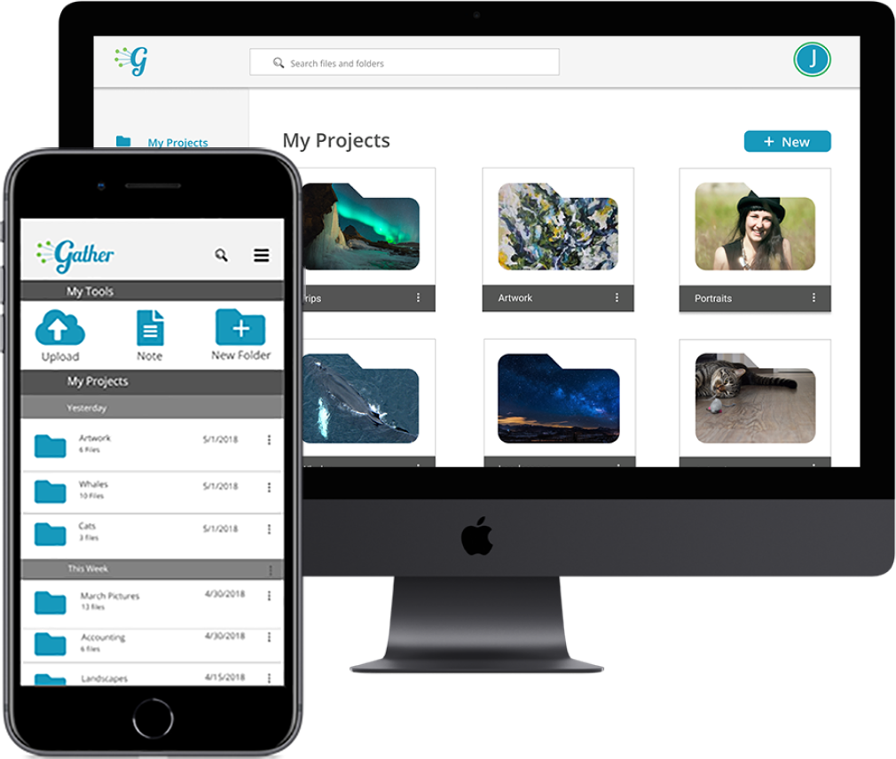
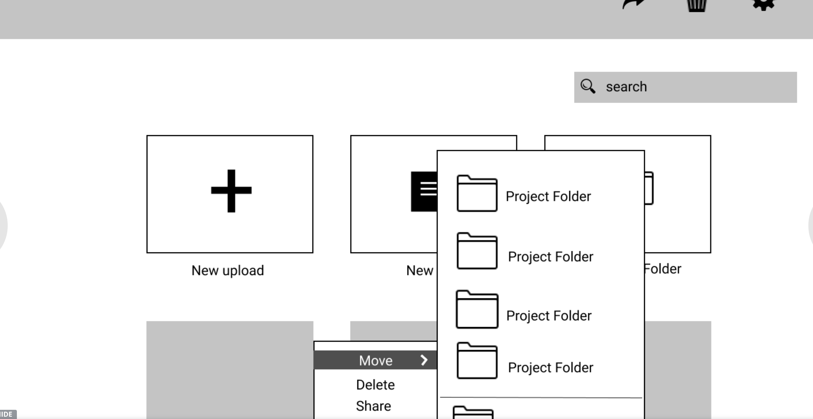

Roles
Research
Branding
Visual Design
User Testing
Identity
 

Research
Branding
Visual Design
User Testing
Identity
Low-Fidelity Wireframes
User Personas
Sitemap and User flows
Logo design
Style Guide
Responsive App Design
Figma
Usability Hub
Illustrator
Invision
Draw.io
Managing your content on cloud storage can be a cluttered and disorganized experience. Cloud storage services are generally lacking in versatility or trying to do too many things at once. Because of this, users find themselves juggling between many cloud storage sites. Gather strives to simplify cloud storage by making it easy to keep your content all in one place.
Gather gives you more time to focus on what matters with intuitive organization, seamless collaboration and versatile uploading, all in one place. With Gather you can upload any time of file and organize it with visual folders and categories. Sharing and content creation keep you connected and give you an all in one solution to cloud storage.
Coming up with Gather had to begin by understanding cloud storage users needs and pain points. In my user survey I wanted to figure out:
What did users love about cloud storage? What features are actually used in cloud storage apps, and what is filler? get a sense of where their frustrations were when using cloud storage.
79% of users use Google Drive for cloud storage
39% of users liked the idea of having all their files in one place
27% said it was hard to keep their cloud storage organized
After completing the survey, I realized that users really needed a cloud storage app that could meet their expectations of organization and versatility. The ability to create content, upload any type of file and have robust sharing features was what users weren’t finding in the current cloud storage market. Juggling multiple apps was too complicated and leaving them disorganized and frustrated.
The needs of cloud storage users were simple, sharing and uploading any type of file with anyone. I needed to create a cloud storage app that made it simple to keep track of your content and share it.


To get an idea of the needs of different users, I developed some user personas. Julie the teacher, needs an easy way to share files with her coworkers and students. Roger needs a collaborative sharing experience for his freelance business. Forgetful Randy is a busy student who doesn't have lots of time to learn a new piece of software and wishes cloud storage wasn't so complicated.


Based on the results from the survey and using my user personas as a base, I went ahead and created some user stories to help prioritize features and define the scope of the project.
To keep the user experience as smooth as possible, user flows were made. These user flows focused on smooth sign up, sharing and uploading. These flows became the backbone for my prototypes moving forward.

I created Low-fidelity wireframes using Invision and tested them with a usability test script for 3 different users. I wanted my tests to feature ease of onboarding, uploading and moving content. While users had an easy experience signing up and uploading, some users showed hesitation while moving content. As I moved towards future iterations, I added some iconography for the move feature.
Before I went on to higher fidelity prototypes, it was time to get a feel for the brand’s vision and style. I knew the brand mission centered around bringing together people and content. After lots of brainstorming, the name Gather formed. The community feel of Gather lended itself to a script font. Lobster was a perfect pairing for the vintage togetherness that is at the core of Gather’s brand. Open sans as a supporting text was friendly, airy and easy to read.


Still not sure of a few aspects of my design, I got the help of the public to help me with some final preference tests. I tested a folder design, features page and nav bar design on Usability Hub, with 32 responses here are the results:
14%
14%
71%

25%
75%
25%
75%
Our high fidelity prototypes went through many design iterations based on user feedback. During our first round of testing users felt the iconography was hard to read, but when we made it bigger the design looked cluttered. For our next iteration we simplified to a single icon which opened a drop down menu. Many design iterations later, users had a smooth experience uploading and organizing their content on the app.

Cloud storage has gone in a lot of exciting directions lately, with new features added daily. Given the limited scope of the project, there were a lot of features that would benefit further research and exploration, especially around content creation and sharing. Given further time I would love further flesh out these concepts and see what features would be beneficial in the future.
Working through Gather helped me gain confidence in the iterative process of design. Creating an app that centered around user content was challenging. After completing many rounds of user feedback and design iterations, I was able to make a cloud storage app with a smooth user experience.